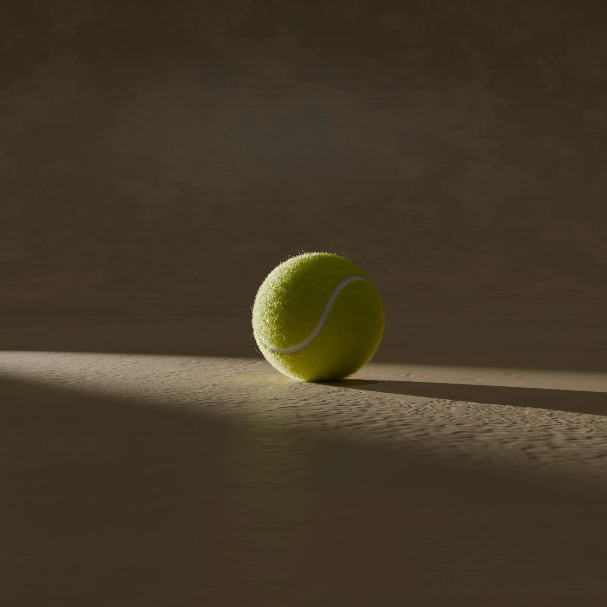
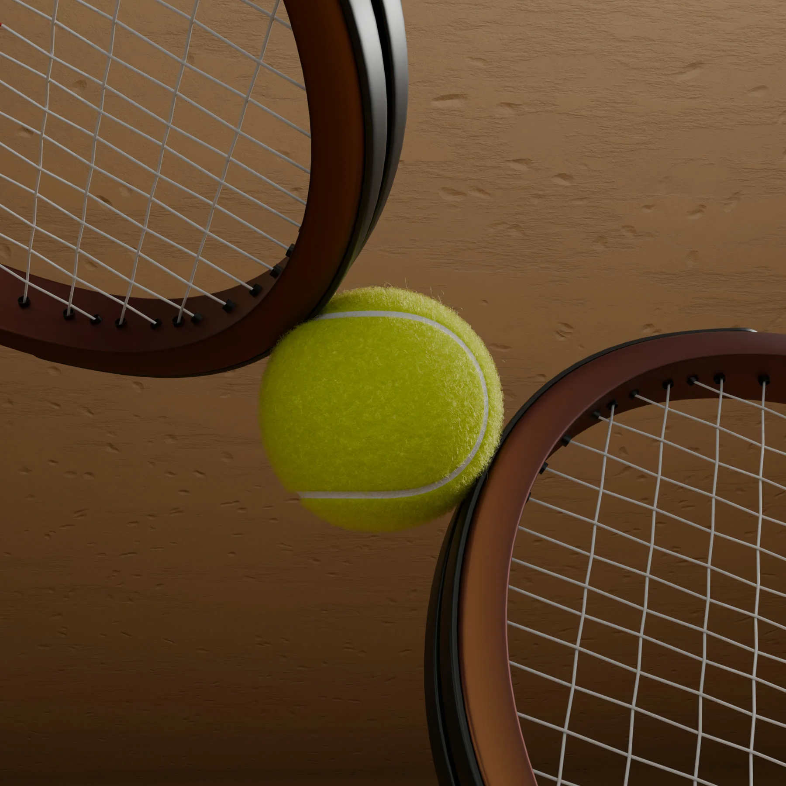
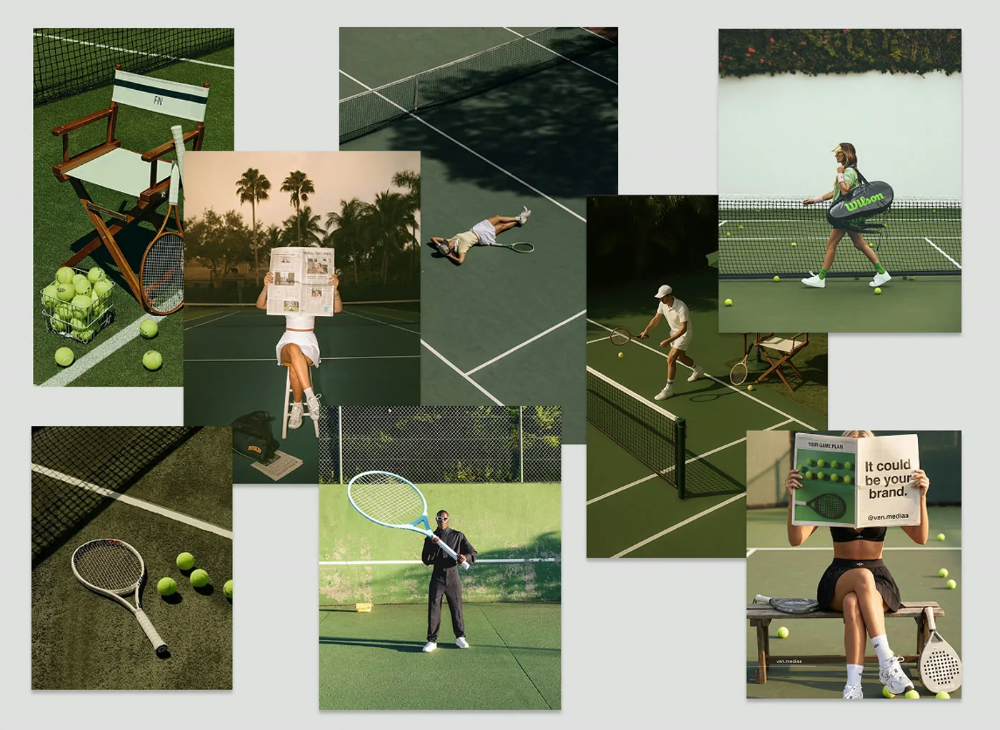

Work
3D Light Renders
Tennis — 3D Motion & Style Frames
An exam brief: produce a short 3D video, style frames and a moodboard for a sport of my choice. I chose tennis — leaning into clay-court tones, tactile materials and a single dramatic light source to make a still tennis ball feel alive.


Motion
The animation
My first ever animation in Blender — it isn't my best work out there, but we all start somewhere.
Direction
Moodboard
The reference board that shaped the direction before opening Blender — sun-warmed clay courts, minimal editorial styling and close, tactile shots of rackets and balls.
